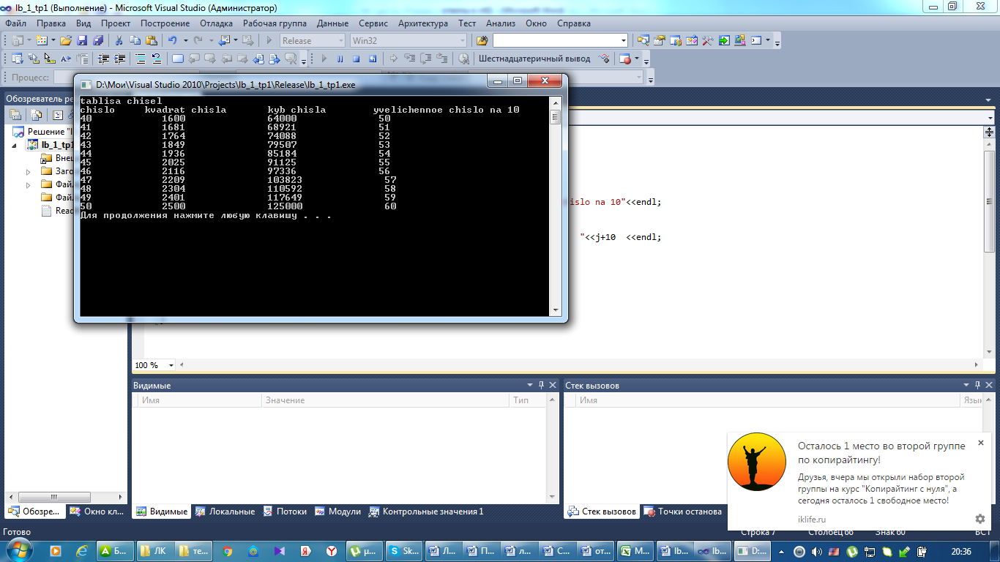

Лабораторная работа № 4
Разработка программ с применением операторов цикла
Цель работы: Знакомство и получение навыков работы по созданию программ с использованием операторов цикла.
Материальное обеспечение: Компьютерное оборудование и программное обеспечение.
Основные понятия и определения
Операторы цикла используются для организации многократно повторяющихся вычислений. Любой цикл состоит из тела цикла, то есть тех операторов, которые выполняются несколько раз, начальных установок, модификации параметра цикла и проверки условия продолжения выполнения цикла. Тело цикла будет повторяться до тех пор, пока условие цикла истинно. Один проход цикла называется итерацией. Проверка условия выполняется на каждой итерации либо до тела цикла, либо после тела цикла. Переменные, изменяющиеся в теле цикла и используемые при проверке условия продолжения, называются параметрами цикла. Целочисленные параметры цикла, изменяющиеся с постоянным шагом на каждой итерации, называются счетчиками цикла. Начальные установки могут явно не присутствовать в программе, их смысл состоит в том, чтобы до входа в цикл задать значения переменным, которые в нем используются. Цикл завершается, если условие его продолжения не выполняется. Возможно принудительное завершение, как текущей итерации, так и цикла в целом. Для этого служат операторы break, continue, return и goto.
Цикл с параметром (for). Предоставляет возможность повторять один или несколько операторов указанное число раз.
Цикл с параметром имеет следующий формат:
for ( инициализация; выражение; модификации) { операторы };
Инициализация используется для объявления и присвоения начальных значений величинам, используемым в цикле.
Выражение определяет условия выполнения цикла: если его результат, приведенный к типу bool, равен true, цикл выполняется.
Модификации выполняются после каждой итерации цикла и служат обычно для изменения параметров цикла. В части модификаций можно записать несколько операторов через запятую. Простой или составной оператор представляет собой тело цикла.
Цикл с постусловием (do while)
Имеет вид:
do { операторы } while условие ;
Сначала выполняется простой или составной оператор, составляющий тело цикла, а затем вычисляется выражение. Если оно истинно, тело цикла выполняется еще раз. Цикл завершается, когда выражение станет равным false или в теле цикла будет выполнен какой –либо оператор передачи управления.
Цикл с предусловием (while)
Имеет вид:
while ( условие ) { операторы }
Выражение определяет условие повторения тела цикла, представленного простым или составным оператором. Выполнение оператора начинается с вычисления выражения. Если оно истинно (не равно false), выполняется оператор цикла. Если при первой проверки выражения равно false цикл не выполняется ни разу. Выражение вычисляется перед каждой итерацией цикла.
Этапы выполнения программы включают следующие пункты.
1.Определяете, с какими именно библиотеками (заголовочными файлами) вы будете работать. В данном случае с библиотекой <iostream>. Данная библиотека обеспечивает работу потока cout.
2.Написание главной функции программы. Функция main - главная функция программы.
3.Начало тела функции. Открывается фигурная скобка.
4.Описание переменных. Определение типа переменных и присвоение им первоначального значения.
5.Написание цикла программы.
6.Написание операторов программы и выражений. В данном случае используем оператор cout, чтобы вывести результат программы на экран.
7.Конец функции. Закрывается фигурная скобка.
Методический пример:
Написать программу, которая выводит на экран последовательность целых чисел.
начало
#include <iostream>
using namespace std;
int main()
{
int chislo;
for (chislo = 1; chislo <= 10; chislo++)
cout << chislo <<' ';
system("PAUSE");
return 0;
}
Результат программы:
12345678910
Варианты заданий:

1. Разработать блок – схему и составить программу, которая должна выводить таблицу чисел от 1 до 9. В первом столбце должны находиться числа от 1 до 9 во втором столбце — квадраты этих чисел, в третьем столбце кубы этих чисел, а в четвертом столбце увеличенное число на 15.
2.Разработать блок – схему и составить программу, которая должна выводить таблицу чисел от 12 до 22. В первом столбце должны находиться числа от 12 до 22 во втором столбце — квадраты этих чисел, в третьем столбце кубы этих чисел, а в четвертом столбце увеличенное число на 10.
3.Разработать блок – схему и составить программу, которая должна выводить таблицу чисел от 25 до 35. В первом столбце должны находиться числа от 25 до 35 во втором столбце — квадраты этих чисел, в третьем столбце кубы этих чисел, а в четвертом столбце увеличенное число на 8.
4.Разработать блок – схему и составить программу, которая должна выводить таблицу чисел от 36 до 46. В первом столбце должны находиться числа от 36 до 46 во втором столбце — квадраты этих чисел, в третьем столбце кубы этих чисел, а в четвертом столбце увеличенное число на 12.
5.Разработать блок – схему и составить программу, которая должна выводить таблицу чисел от 34 до 44. В первом столбце должны находиться числа от 34 до 44 во втором столбце — квадраты этих чисел, в третьем столбце кубы этих чисел, а в четвертом столбце увеличенное число на 14.
6.Разработать блок – схему и составить программу, которая должна выводить таблицу чисел от 46 до 56. В первом столбце должны находиться числа от 46 до 56 во втором столбце — квадраты этих чисел, в третьем столбце кубы этих чисел, а в четвертом столбце увеличенное число на 13
7.Разработать блок – схему и составить программу, которая должна выводить таблицу чисел от 58 до 68. В первом столбце должны находиться числа от 58 до 68 во втором столбце — квадраты этих чисел, в третьем столбце кубы этих чисел, а в четвертом столбце увеличенное число на 12.
8.Разработать блок – схему и составить программу, которая должна выводить таблицу чисел от 70 до 80. В первом столбце должны находиться числа от 70 до 80 во втором столбце — квадраты этих чисел, в третьем столбце кубы этих чисел, а в четвертом столбце увеличенное число на 14.
Порядок выполения работы:
1.Изучить теоретические сведения по данной лабораторной работе.
2.Составить программу для заданного варианта.
3.Записать программу на языке Visual C++.
4.Отладить программу.
5.Продемонстрировать работу программы на ПК для заданного варианта.
Содержание отчета:
1.Тема и цель работы.
2.Вариант задания.
3.Блок – схема исходной задачи.
4.Листинг и результат программы.
5.Контрольные вопросы.
Контрольные вопросы:
1.Какие циклы вы знаете? Для чего используются операторы цикла?
2.Что такое итерация цикла?
3.Какой формат имеют циклы с параметром, цикл предусловием, цикл с постусловием?
Литература:
1.Хортон А. Visual 2010: полный курс.:Пер. с анг.-М.:ООО «И.Д.Вильямс», 2011г , 1216 с.: ил.
2.Пахомов Б.И. С/C++ и MS Visual C++ 2010 для начинающих. – СПб.:БХВ-Петербург, 2011.-736 с.:ил.
3.Зиборов В. В. MS Visual C++ 2010 в среде.NET. Библиотека программиста. — СПб.: Питер,
2012. — 320 с.: ил.
4.Прохоренок Н.А. Программирование на С++ в Visual Studio 2010 Express, - СПб.: Питер, 2011г , 71 с.: ил.
5.Степаненко О.Е. VisualC++.NET.Классикапрограммирования.:-М:Научнаякнига,К.;Бу-кипист,2010.—768с.